花了点时间整理了一下重装系统后要做的事。
这些都是按照我个人喜好设置的，大家可以自行选取操作！
大纲
简略操作解释
系统相关
1. 更改桌面图标
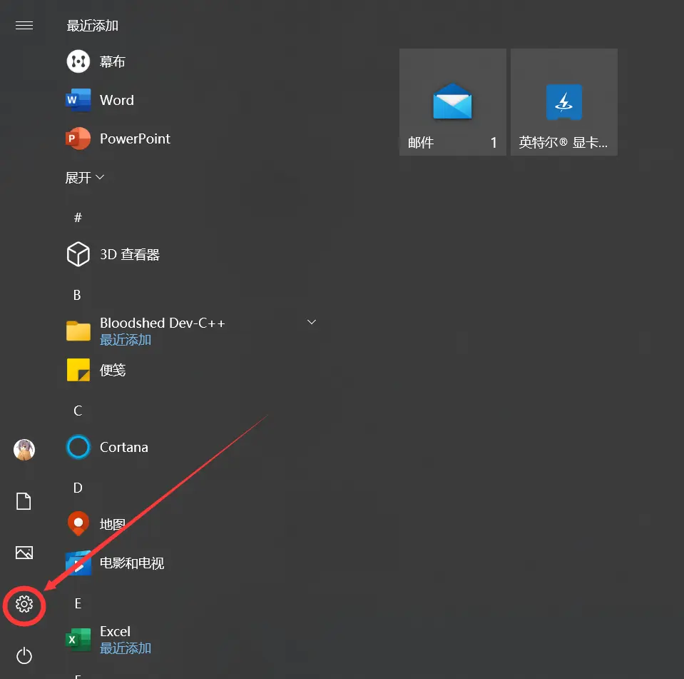
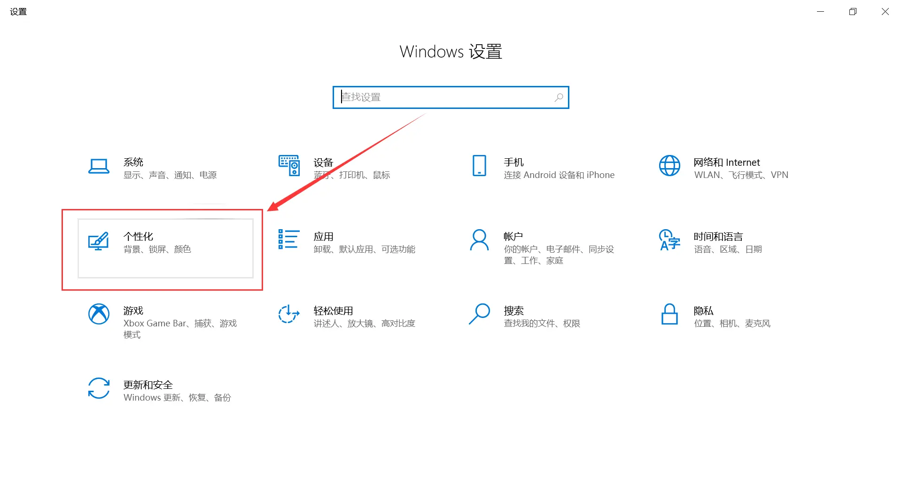
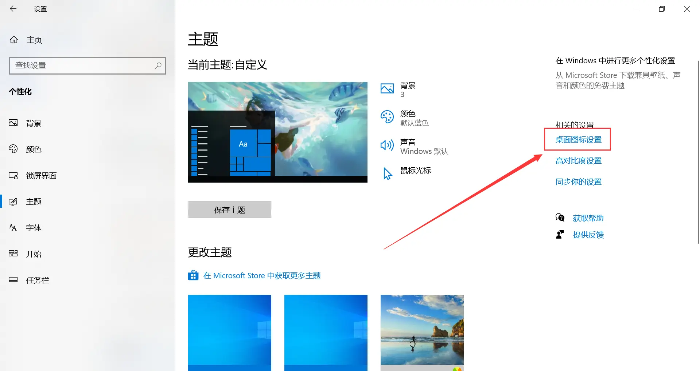
2. 更改新内容存储的位置
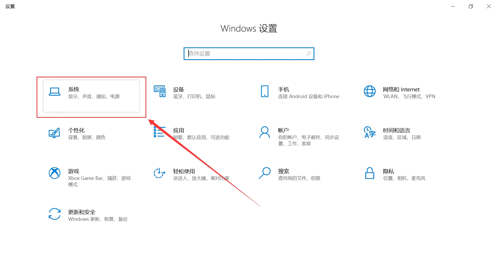
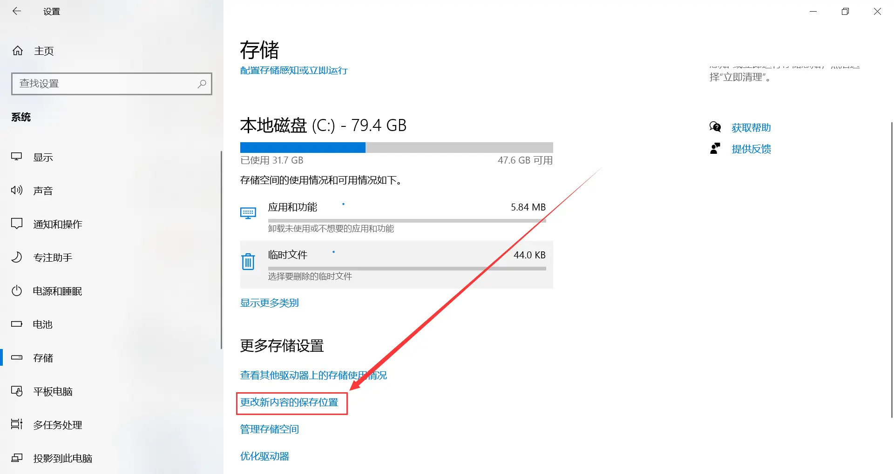
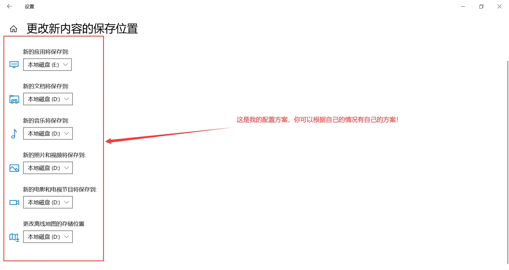
3. 更改“视频”、“图片”、“文档”等的保存位置
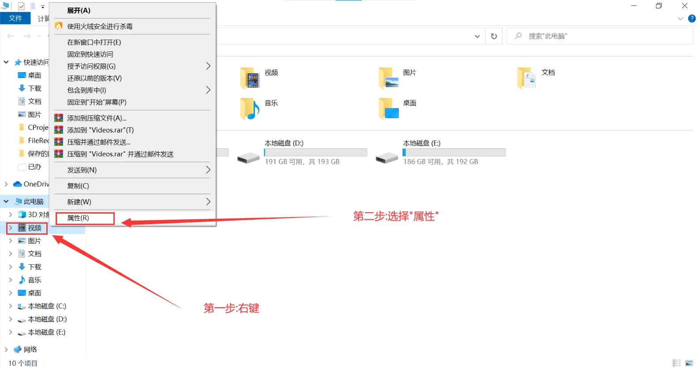
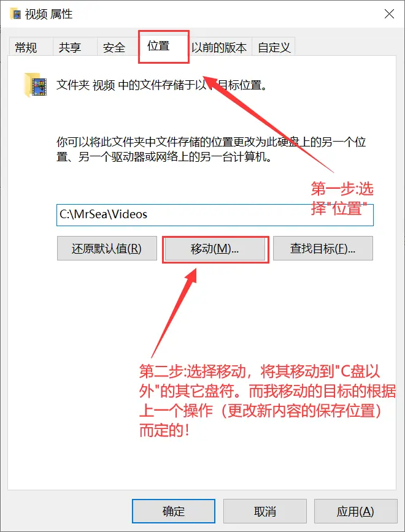
注释：这里我是根据 “2. 更改新内容存储的位置” 里的操作进行选择位置的！
例如：我在 “2. 更改新内容存储的位置” 操作中，将视频默认更改到了D盘。
那么在路径 “D:\电脑用户名\” 中就会有一个默认的 “Videos” 文件夹(其中文名为“视频”)！
将新位置定在这里会更加有条理一些！
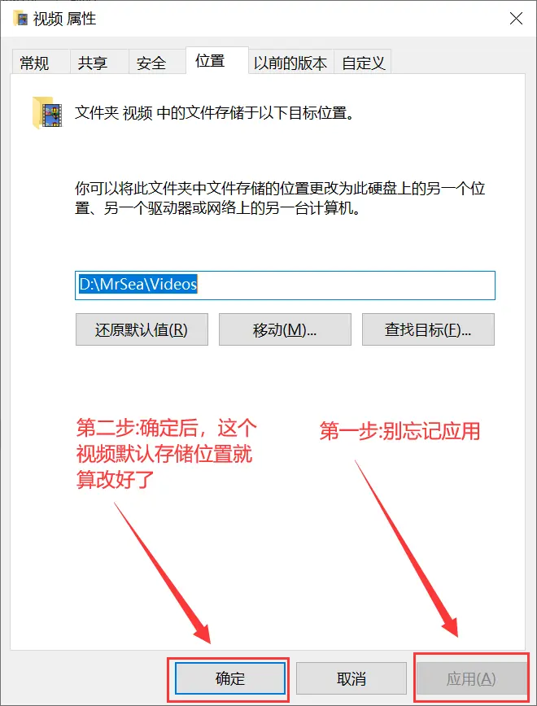
软件相关
注意：我这里使用的软件都是我自己喜欢的！
大家也可以按照自己的意愿自行替换相应的软件！
1. 安全软件
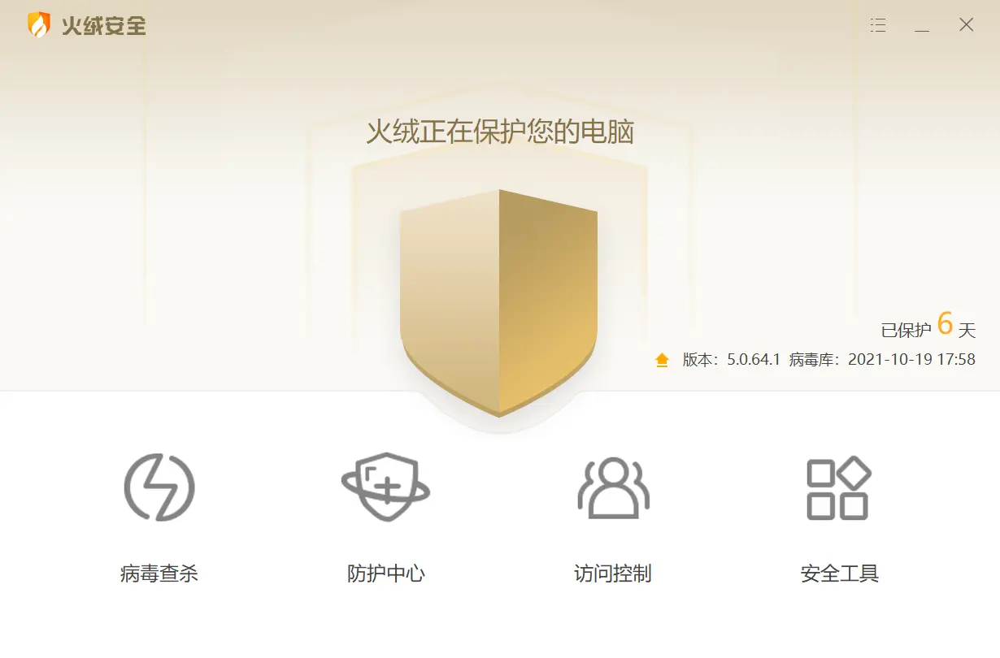
安全软件我一直以来用的就是 “火绒” ，这里是描述我的配置方案。
至于为什么选 火绒 我就不做过多的赘述了！
大家可以自行百度 火绒 作为安全软件的优缺点！
2. 浏览器
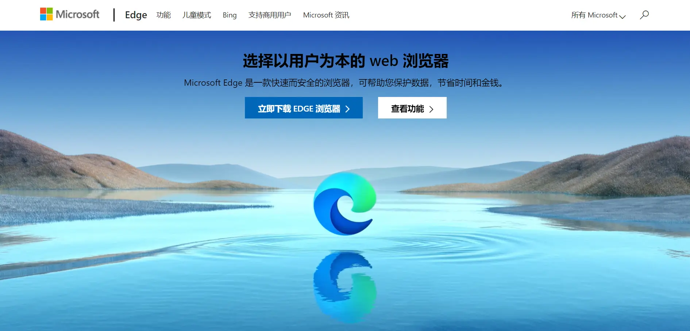
之前我的浏览器一直是标配的 “Chrome” ，但由于 Chrome 隶属于 Google 公司，导致有些功能在国内很难使用！
外加上 Microsoft 推出**最新版EDGE后，我就果断选择了最新版EDGE**。
大家可以自行了解相关信息，我不做过多赘述！
3. 解压软件
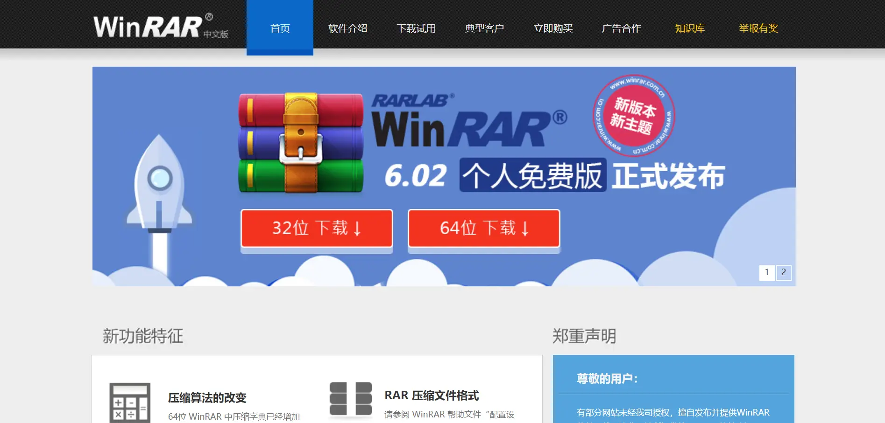
WinRAR (提取码:a5rw)虽然有广告，但是我已经做好破解版了！
大家可以按照操作说明进行操作，使用我的破解版 WinRAR 。
4. Office系列办公软件
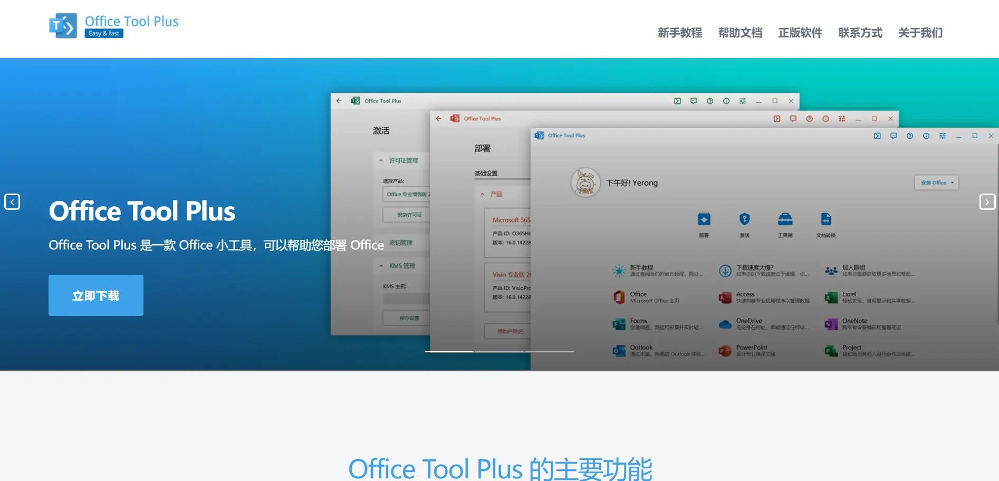
我使用的是 Office_Tool_Pro 来配置我需要的 Office！
软件官网和程序内部均有详细说明，我这里也不过多介绍了！
5. Notepad++
一个小巧实用的编辑软件还是很有必要的，特别是针对我这种经常需要在各大编程语言的来回变换的苦逼孩子TOT~
所以，我选择了 Notepad++ (提取码:mxd3) !
有兴趣的可以自己去了解 Notepad++ 的强大之处！
优化相关
电脑鼠标指针
这个我一直用的是 Helltaker Stroke Version (提取码:davh)!
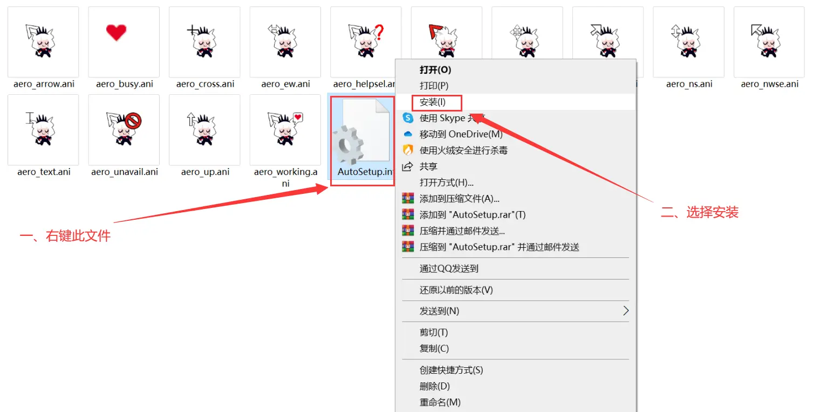
声明：这个鼠标指针原作者不是我！
我只是把鼠标指针的安装模块和对应指针的名称进行了修改，使得其看起来更专业一些！
强迫症~
哈哈哈哈~
见谅~
电脑壁纸
电脑壁纸也是电脑美观的一大亮点！
当然，找壁纸大家都是有能力的！我就不献丑了~
嘻嘻(●’◡’●)~